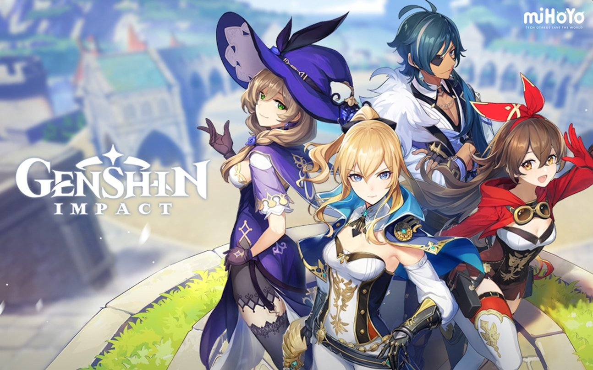

NAX'I Games
Apr 28, 2021
Nax'i Games является не менее важной частью Nax'i Inc, так как является отличным средством отдохнуть и расслабиться после тяжелого рабочего дня вместе с друзьями. Мы предпочитаем играть в такие игры как Genshin Impact, Fifa, Rocket Ligue, Counter-Strike; этот список можно продолжать еще долго...
Fifa 21 FIFA 21 — 28-ая по счёту компьютерная игра из серии FIFA в жанре футбольного симулятора, разработанная компаниями EA Vancouver и EA Romania под издательством Electronic Arts. На ПК, PlayStation 4, Xbox One и Nintendo Switch игра вышла 9 октября 2020 года, а на платформы нового поколения — 3 декабря 2020 года.
Genshin impact Genshin Impact — компьютерная игра в жанре Action/RPG с открытым миром, разработанная китайской компанией miHoYo Limited. Игра распространяется посредством цифровой дистрибуции по модели free-to-play, но имеет внутриигровой магазин, использующий реальную валюту.
Rocket Ligue Rocket League — аркадная гоночная игра в жанре футбола, разработанная и изданная компанией Psyonix для Windows, PlayStation 4. Выход игры состоялся 7 июля 2015 года для платформ Windows и PlayStation 4. В 2016 году игра выпускается для Xbox One и для Linux и macOS, но поддержка последних была прекращена в 2020 году